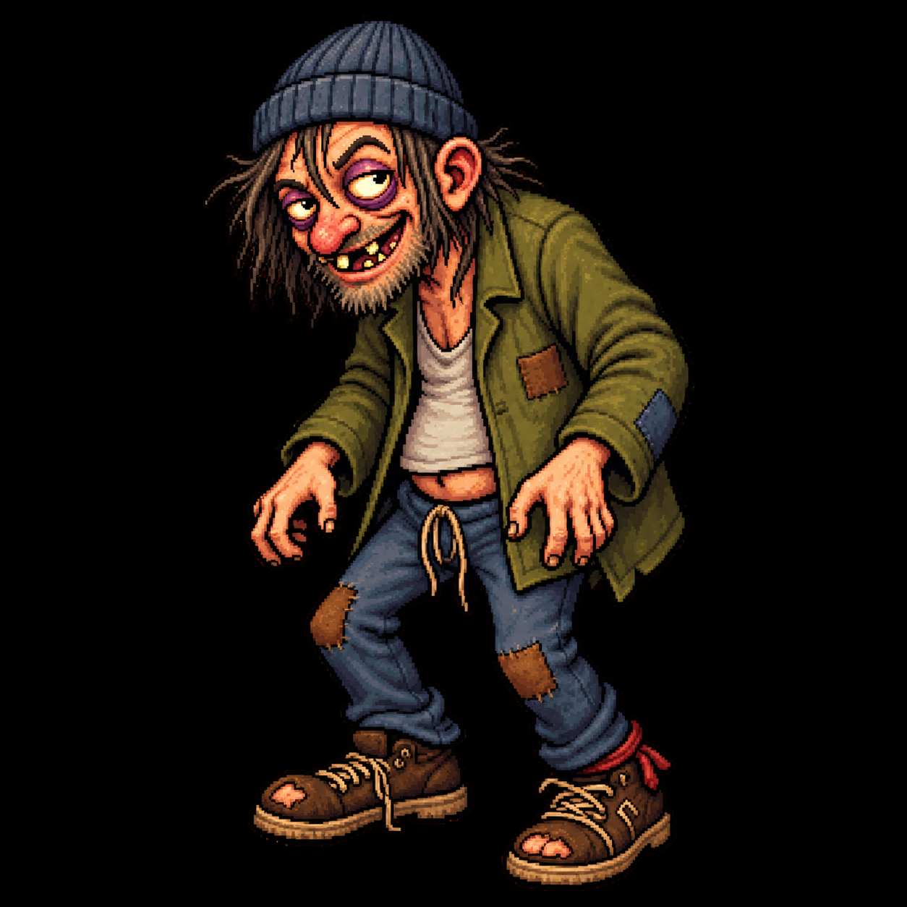
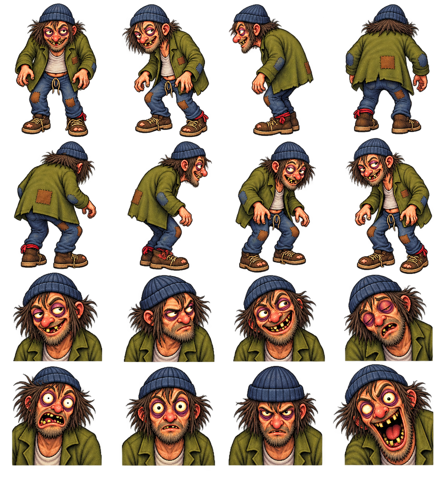
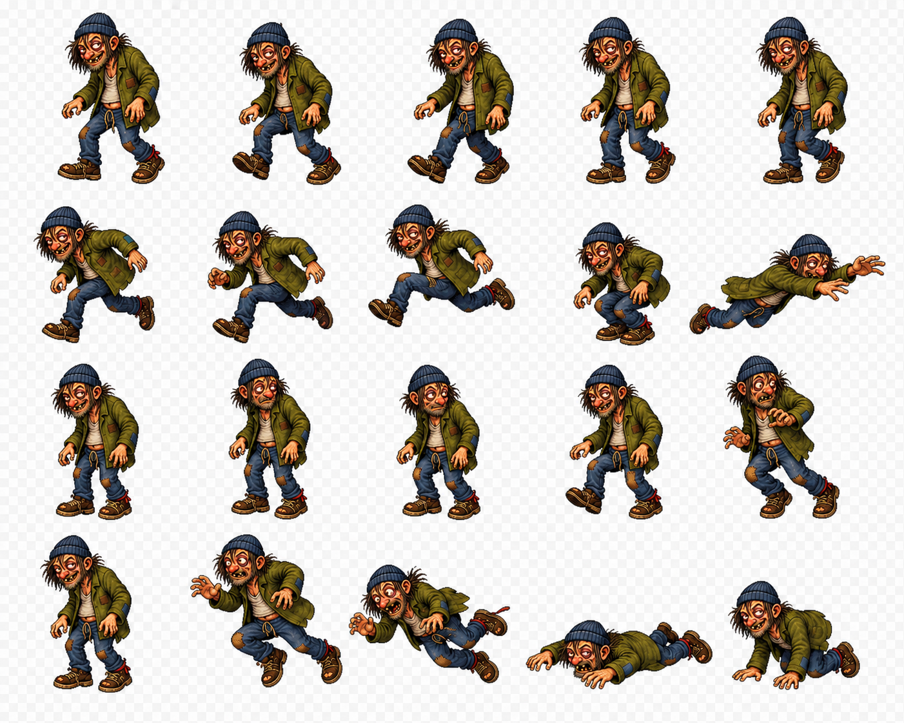
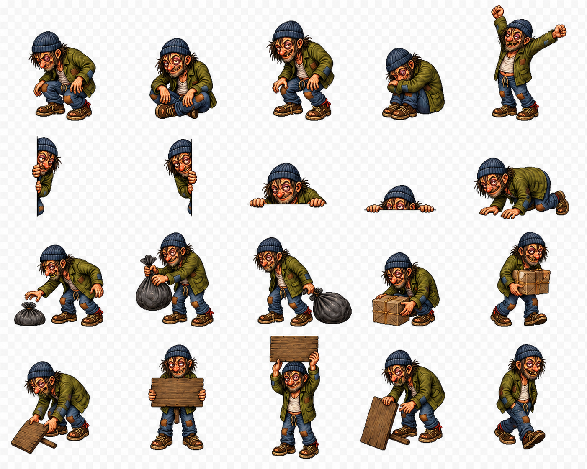
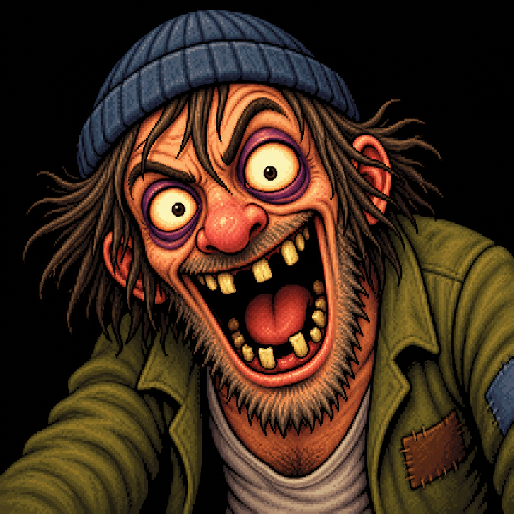

A / Identity lock
Keep him recognizably Gary before making him move.
Recommendation: the everyday master controls anatomy, clothes, material texture, and silhouette. The extreme face is not a general expression—it belongs only to the Gary Event.
Image guideline
Ugly, specific, and readable at 205 px
- 01Hunch is the skeleton. Head leads, shoulders round, pelvis trails, knees stay soft. Never straighten him into a mascot stance.
- 02Six silhouette anchors. Ribbed beanie, hooked nose, shaggy hair, gorilla-length hands, ragged coat, and oversized broken boots. At least four must read in every pose.
- 03Do not clean him up. Keep bruised eyes, uneven teeth, patches, loose laces, and coarse hand-painted pixel edges. No chibi proportions, smooth vector treatment, or photorealism.
- 04Asymmetry may mirror. Author directional routines facing east and flip them at runtime. Patch side is screen-relative, not continuity-critical. Never mirror sign text or the Gary Event face.
- 05Routine Gary stays contained. His normal eyes can widen and drift, but the full open-mouth scream, face-fill crop, and four-pixel jitter are Gary Event-only.
- 06One light, one texture. Warm upper-left key light, near-black outlines, material-specific hatch/dither, and no cast shadow baked into sprites.
Ink#17140F
Beanie#30384D
Coat#686526
Denim#40546B
Skin light#F59A68
Skin shade#A64D2E
Bruise#713450
Teeth#D8BD68
Undershirt#D1C0A5
Leather#5C3A21
Patch#93552D
Cool light#59647B
Turnaround + expression anchor
Eight angles establish volume; eight expressions establish the only approved facial range. Final art redraws these; it does not slice this generated sheet.

Neutralloiter
Side-eyesuspicious
Grinstupid
Dozesleepy
Startledrecoil
Fixatedcursor stare
Stillunsettling
ScreamEvent only
Turnaround decision
Final source requires front, east three-quarter, east profile, back three-quarter, and back. West-facing directional routines are runtime mirrors; front/back and all sign-bearing art are authored separately. Hair, nose, hands, hem, and boots must not pop in volume between angles.
205logical px visual height
±6 px by pose, pivot excluded
±6 px by pose, pivot excluded
B / Behavior coverage
Every joke gets an entrance, read, exit.
The generated boards are pose prompts. The inventory below is the complete v0.1 asset boundary; follow/flee reuse locomotion, window occlusion is a runtime clip, and the dark blink is procedural.
13routine action families
12fixed sign faces
1Event face master
REVIEW COMP · RGB CHECKERBOARD

Movement + direct reactionsWalk · sprint/flee · cursor stare/follow · trip/fall/recover
REVIEW COMP · RGB CHECKERBOARD

Staged actions + Gary PropsSit · Gary Doze · peeks · crawl · garbage · mystery file · blank sign
| Gary Action | Sprite clips | Unique frame budget | Runtime composition / fallback |
|---|---|---|---|
| Safe loiter | loiter.loop | 4 @ 4 fps | One breathing/weight-shift loop at safe anchor. |
| Taskbar walk | walk.loop | 8 @ 10 fps | East master; mirror west. Monitor edge substitutes for ambiguous taskbar. |
| Start-button sit | sit.enter / hold / exit | 4 + 2 + reverse @ 8/3 fps | Anchor comes from runtime geometry; nearest corner fallback uses same art. |
| Gary Doze | doze.enter / hold / wake | 4 + 4 + 5 @ 8/2/10 fps | Visible curl-up only; never represents Garynap. |
| Edge peek | peek.h / peek.v | 4 + 2 + reverse per axis | Runtime clips the sprite to the monitor edge; horizontal direction mirrors. |
| Behind-window crawl | crawl.enter / loop / exit | 4 + 8 + 4 @ 10 fps | One crawl sheet plus runtime clip mask. Unsafe geometry hides him immediately. |
| Sprint | sprint.enter / loop / exit | 2 + 6 + 2 @ 14 fps | One-monitor route; edge-exit frame may be held for safe disappearance. |
| Fall | fall.trip / prone / rise | 7 + 2 + 5 @ 12/2/10 fps | Cancellation removes the prone pose without a recovery requirement. |
| Cursor stare | stare.near | 5 @ 6 fps | Head/eyes target five coarse buckets; body remains on loiter pivot. |
| Cursor follow | walk.loop | Reuses walk | Runtime adjusts speed and keeps visible distance. |
| Cursor flee | recoil / sprint | 2 + reused sprint | Nearest-edge route; disappear within two seconds. |
| Garbage drag | garbage.reach / drag / exit | 5 + 6 + 4 @ 8 fps | Separate tied-bundle prop, attached to a hand socket; never leaves debris. |
| Fake icon theft | theft.look / grab / carry | 4 + 4 + 6 @ 6/8 fps | One unmistakably generic mystery-file prop; no filename, logo, or real-icon imitation. |
| Sign | sign.raise / hold / lower | 5 + 2 + reverse @ 8/2 fps | Gary and blank board are art; twelve exact faces are composited build-time, never mirrored. |
| Gary Event | event.face.fill | 1 opaque canonical image | Blink is procedural; three-second gap has no sprite; face center-crops for 900 ms with ≤4 px jitter. |
Exact sign-face catalog
One blank board, twelve bundled faces
BUSY
NICE MOUSE
BACK SOON
NO REFUNDS
I LIVE HERE
NOT NOW
KEEP MOVING
WHO SENT YOU
NOTHING HAPPENED
I SAW THAT
DON’T BLINK
HE’S NOT ASLEEP
Gary Event art boundary
00:00–00:300
One dark blinkProcedural black veil. No sprite, white flash, or strobe.
00:300–03:300
Untouched desktopGary absent. Exact silence. No hidden art asset.

03:300–04:200
Face + hitOpaque center-crop, one 900 ms sound, then hard cut and destroy overlay.
C / Production contract
Make rough art hard to ship wrong.
The atlas is a build input, not a giant runtime bitmap guessed by filename. Source art, packed pages, pivots, frame duration, sign faces, and sound metadata are versioned together.
01 / Scale + pivots
205 logical pixels is the contract
AUTHOR4× sourceEveryday visual bounds target 820 source pixels high. Never upscale a smaller frame to meet the grid.
RUNTIME205 logical pxNormal standing/loiter bounds, with ±6 px pose variation. Windows DPI supplies physical scaling.
PIVOTBoot contactBottom-center ground pivot; separate hand socket for Gary Props; face pivot at nose bridge.
GRID4 logical pxMajor body masses align to a four-pixel logical grid; hands, hair, and laces may break it.
FILTERHigh-qualityDownsample the hand-painted source once; no per-frame size drift or mixed interpolation.
MONITORSPer-monitor DPIRe-evaluate physical size after topology/DPI change; do not rescale midway through an action.
02 / Alpha + export
Routine art is RGBA; the Event face is opaque
Routine sources export as sRGB PNG with straight alpha, transparent RGB cleared to zero, at least 16 source-pixel padding at 4×, and no baked floor, shadow, checkerboard, window, taskbar, or desktop. Edge antialiasing may be semi-transparent; interior subject pixels remain opaque. The canonical Gary Event face is the sole opaque RGB exception because it center-crops to fill a black-backed monitor overlay.
- Inspect on black matte
- Inspect on white matte
- Inspect on magenta matte
- Reject dark/white fringe
- Reject RGB checkerboard
- Reject crop at maximum extremity
- Confirm sRGB profile
- Confirm alpha survives packing
03 / Naming + manifest
Names describe source; metadata drives runtime
Lowercase ASCII. Underscores separate fields; hyphens stay inside message/variant slugs. Directions are e, w, n, s, or none. Frames are zero-padded. The runtime reads gary-atlas.v1.json; it never infers duration or pivots from a filename.
gary_<mode>_<action>_<phase>_<dir>_<frame:000>@4x.png
gary_awake_walk_loop_e_003@4x.png
gary_awake_sign_hold_none_000@4x.png
prop_sign_nothing-happened@4x.png
prop_mystery-file_hold@4x.png
event_face_fill@1x.png
sfx_routine_boot-scuff_01.wav
sfx_event_scream-impact.wav
gary_awake_walk_loop_e_003@4x.png
gary_awake_sign_hold_none_000@4x.png
prop_sign_nothing-happened@4x.png
prop_mystery-file_hold@4x.png
event_face_fill@1x.png
sfx_routine_boot-scuff_01.wav
sfx_event_scream-impact.wav
04 / Atlas packing
Three logical pages, one versioned manifest
PAGE AIdentity + locomotionLoiter, walk, sprint, fall, cursor heads, and directional transition frames.
PAGE BStaged actionsSit, Gary Doze, peeks, crawl, garbage, theft, sign body, and hand sockets.
PAGE CProps + sign facesTrash bundle, generic mystery-file prop, blank board, and twelve exact message faces.
Pack only at build time into RGBA pages no larger than 4096×4096. Use two-pixel extrusion around each packed rectangle plus the source padding. Manifest entries contain page, rectangle, original trimmed size, logical bounds, ground pivot, optional hand socket, per-frame milliseconds, next frame, and mirror permission. The Event face and sound remain standalone assets.
05 / Sound palette
Small Foley, one horrible exception
Ship bundled mono 48 kHz / 16-bit PCM WAV. No speech, music, system-volume change, runtime gain boost, looping Event audio, or network fetch. Routine sounds get 5–10 ms edge fades and peak between −18 and −12 dBFS; each eligible action still plays Foley only 25% of the time.
| Family | Files | Length | Character / use |
|---|---|---|---|
| Boot scuff | 3 | 120–220 ms | Dry, soft leather/grit. Walk, follow, and sparse sprint steps. |
| Rapid boot burst | 2 | 450–800 ms | Quiet uneven cadence. Sprint or flee; never cartoon whistle. |
| Coat rustle | 2 | 350–650 ms | Cloth scrape for behind-window crawl. |
| Trash drag | 2 | 650–1100 ms | Bag and paper rustle, no glass break or file/UI sound. |
| Body thud | 2 | 160–300 ms | Dull comic weight for Fall; no bone crack. |
| Gary Doze snore | 2 | 600–900 ms | One quiet nasal exhale. No words. |
| Event scream-impact | 1 | exactly 900 ms | Distorted human/metal impact, −1 dBTP ceiling, at most −10 LUFS-S. One play at existing system volume; missing audio never delays the face. |
06 / Rough-but-complete acceptance
A behavior is not present because one pose exists
- Every listed action has recognizable entrance, performance, and coherent exit
- Every environmental fallback uses the same approved identity and cleanup rule
- All directional art obeys the one mirror policy; text and Event art never mirror
- All twelve sign faces match exact approved punctuation and capitalization
- Generic mystery-file prop cannot be mistaken for a real icon or file
- Routine expressions never borrow the Gary Event scream
- Routine sprites pass real-alpha matte checks at 100%, 150%, and 200% Windows scale
- Event rehearsal uses the canonical face and exact 900 ms production sample
- Stop, Garynap, and unsafe-environment cleanup leave no sprite, prop, or audio behind
- Generated contact sheets are redrawn; no review-comp checkerboard reaches the build